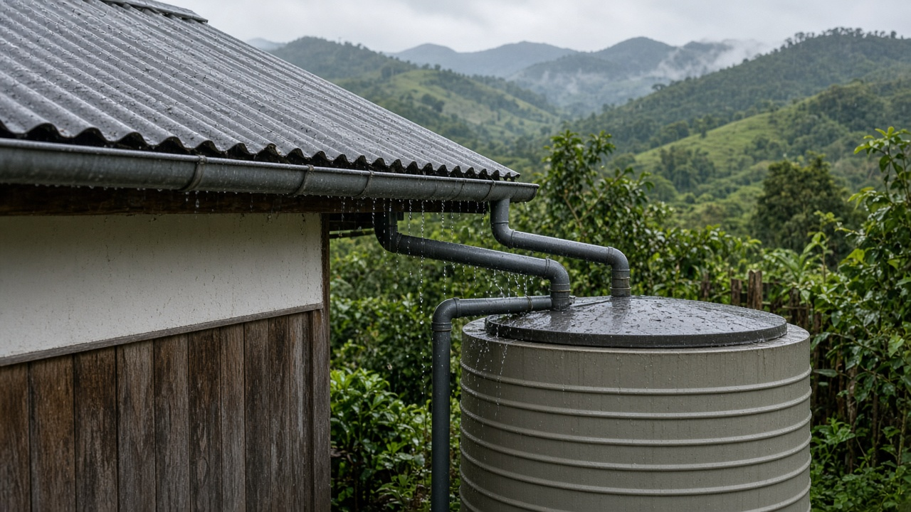
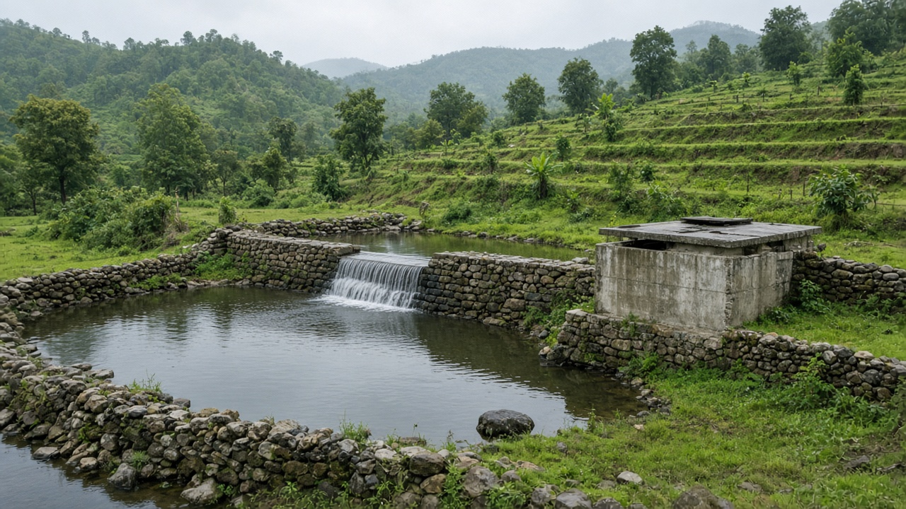
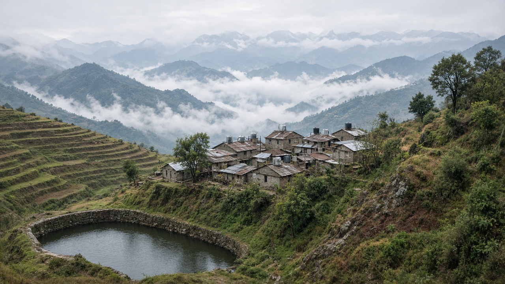

Rainwater Harvesting and Community Water Storage
Published on August 9, 2026

Rainwater harvesting captures precipitation from rooftops, land surfaces, or catchment areas and stores it for later use rather than allowing it to run off unused. This ancient practice has gained renewed importance as communities face unreliable piped supply, drying springs, and increasing climate variability. Systems range from simple rooftop gutters connected to storage tanks at the household level to community ponds, underground cisterns, and check dams that recharge local aquifers. When designed properly with filtration and first-flush diverters that discard initial dirty runoff, harvested rainwater can provide safe drinking water, irrigation, and livestock supply throughout dry periods.
Community water storage extends the concept to shared infrastructure that serves entire villages or neighborhoods. Collective tanks, reservoir ponds, and sand-filter systems reduce per-capita costs and ensure that water is available equitably during scarcity. In hill and mountain regions of Nepal where piped networks are difficult and expensive to extend, community-managed storage has proven effective in bridging gaps between monsoon abundance and pre-monsoon shortage. User committees that collect modest fees, maintain infrastructure, and enforce fair allocation rules are often the backbone of sustainable operation, turning water storage from a one-time construction project into a lasting community asset.
The benefits of rainwater harvesting and community storage extend beyond immediate water supply. These approaches reduce pressure on overdrawn springs and groundwater, decrease erosion by slowing runoff, and build local resilience against drought and service interruptions. They also empower communities to take ownership of their water security rather than depending entirely on centralized systems that may be slow to expand or maintain. Combined with watershed protection, water-quality testing, and integration into broader municipal planning, decentralized harvesting and storage represent practical, scalable solutions for achieving water security in both rural and urbanizing environments.

वर्षाको पानी संकलनले छाना, भू-पृष्ठ, वा जल संग्रह क्षेत्रबाट वर्षा संकलन गरी पछि प्रयोगका लागि भण्डारण गर्छ, बरबाद भएर बग्न दिँदैन। यो प्राचीन अभ्यासले अविश्वसनीय पाइप आपूर्ति, सुक्दै गएका मुहान, र बढ्दो जलवायु परिवर्तनको सामना गर्ने समुदायहरूका लागि नयाँ महत्त्व पाएको छ। प्रणालीहरू घरपरिवार स्तरमा भण्डारण ट्याङ्कीसँग जोडिएका साधारण छाना नालीदेखि सामुदायिक पोखरी, भू-गर्भ ट्याङ्की, र स्थानीय भू-जल पुनःभरण गर्ने चेक बाँध सम्म फैलिएका छन्। छान्ने प्रणाली र सुरुको फोहोर बहाव हटाउने प्रणाली सहित राम्रोसँग डिजाइन गर्दा, संकलित वर्षाको पानीले सुख्खा अवधिमा सुरक्षित पिउने पानी, सिंचाइ, र पशुपालन आपूर्ति दिन सक्छ।
सामुदायिक पानी भण्डारणले यो अवधारणालाई सम्पूर्ण गाउँ वा मोहल्लालाई सेवा दिने साझा पूर्वाधारमा विस्तार गर्छ। सामूहिक ट्याङ्की, जलाशय पोखरी, र बालु छान्ने प्रणालीले प्रति व्यक्ति लागत घटाउँछ र अभावको समयमा पानी न्यायसंगत रूपमा उपलब्ध रहोस् भन्ने सुनिश्चित गर्छ। नेपालका पहाड र हिमाली क्षेत्रहरूमा जहाँ पाइप नेटवर्क विस्तार गर्न गाह्रो र महँगो छ, सामुदायिक व्यवस्थापन भएको भण्डारणले मनसुनको प्रचुरता र मनसुन अघिको अभाव बीचको खाडल पुराउन प्रभावकारी साबित भएको छ। मामूली शुल्क संकलन, पूर्वाधार मर्मत, र न्यायसंगत वितरण नियम लागू गर्ने प्रयोगकर्ता समितिहरू प्रायः दिगो सञ्चालनको मेरुदण्ड हुन्, जसले पानी भण्डारणलाई एक पटकको निर्माण परियोजनाबाट दीर्घकालीन सामुदायिक सम्पत्तिमा परिणत गर्छ।
वर्षाको पानी संकलन र सामुदायिक भण्डारणका लाभ तत्काल पानी आपूर्तिभन्दा टाढा फैलिन्छ। यी उपायहरूले अत्यधिक दबाबमा रहेका मुहान र भू-जलमा चाप कम गर्छ, बहाव ढिलो पारेर क्षरण घटाउँछ, र खडेरी र सेवा अवरोध विरुद्ध स्थानीय लचिलापन बनाउँछ। तिनीहरूले समुदायहरूलाई केन्द्रीकृत प्रणालीमा पूर्ण निर्भर हुनुभन्दा आफ्नो पानी सुरक्षाको स्वामित्व लिन सशक्त बनाउँछ, जुन प्रणालीहरू विस्तार वा मर्मतमा ढिला हुन सक्छन्। जलाधार संरक्षण, पानी गुणस्तर परीक्षण, र व्यापक नगरपालिका योजनामा एकीकरणसँग मिलाएमा, विकेन्द्रीकृत संकलन र भण्डारण ग्रामीण र शहरीकरण हुँदै गएका वातावरण दुवैमा पानी सुरक्षा प्राप्त गर्न व्यावहारिक, विस्तार योग्य समाधान हुन्।

वर्षा जल संचयन छत, भू-सतह, या जल संग्रह क्षेत्र से वर्षा एकत्र करके बाद में उपयोग के लिए संग्रहीत करता है, बजाय इसके कि इसे बेकार बहने दिया जाए। यह प्राचीन प्रथा अविश्वसनीय पाइप आपूर्ति, सूखते झरने, और बढ़ते जलवायु परिवर्तन का सामना करने वाले समुदायों के लिए नया महत्व पा रही है। प्रणालियाँ घरेलू स्तर पर भंडारण टैंकों से जुड़े साधारण छत के नालियों से लेकर सामुदायिक तालाब, भूमिगत टैंक, और स्थानीय भूजल पुनःभरण करने वाले चेक बाँध तक फैली हैं। छानने की प्रणाली और प्रारंभिक गंदे अपवाह को हटाने वाली प्रणाली के साथ ठीक से डिजाइन करने पर, संचित वर्षा जल सूखे समय में सुरक्षित पीने का पानी, सिंचाई, और पशुधन आपूर्ति प्रदान कर सकता है।
सामुदायिक जल भंडारण इस अवधारण को पूरे गाँव या मोहल्लों की सेवा करने वाले साझा बुनियादी ढांचे तक विस्तारित करता है। सामूहिक टैंक, जलाशय तालाब, और रेत-छानने की प्रणालियाँ प्रति व्यक्ति लागत कम करती हैं और संकट के समय जल समान रूप से उपलब्ध रहे यह सुनिश्चित करती हैं। नेपाल के पहाड़ी और हिमाली क्षेत्रों में जहाँ पाइप नेटवर्क का विस्तार कठिन और महँगा है, सामुदायिक प्रबंधित भंडारण ने मानसून की प्रचुरता और मानसून पूर्व की कमी के बीच की खाई पाटने में प्रभावी साबित हुआ है। मामूली शुल्क एकत्र करने, बुनियादी ढांचे का रखरखाव करने, और न्यायसंगत आवंटन नियम लागू करने वाली उपयोगकर्ता समितियाँ अक्सर स्थायी संचालन की रीढ़ होती हैं, जो जल भंडारण को एक बार की निर्माण परियोजना से दीर्घकालिक सामुदायिक संपत्ति में बदल देती हैं।
वर्षा जल संचयन और सामुदायिक भंडारण के लाभ तत्काल जल आपूर्ति से परे फैलते हैं। ये उपाय अत्यधिक दबाव में पड़े झरनों और भूजल पर दबाव कम करते हैं, अपवाह को धीमा करके कटाव घटाते हैं, और सूखे और सेवा बाधाओं के खिलाफ स्थानीय लचीलापन बनाते हैं। ये समुदायों को केंद्रीकृत प्रणालियों पर पूर्णतः निर्भर रहने के बजाय अपनी जल सुरक्षा का स्वामित्व लेने के लिए सशक्त बनाते हैं, जो विस्तार या रखरखाव में धीमी हो सकती हैं। जलग्रह संरक्षण, जल गुणवत्ता परीक्षण, और व्यापक नगरपालिका योजना में एकीकरण के साथ मिलकर, विकेंद्रीकृत संचयन और भंडारण ग्रामीण और शहरीकरण होते वातावरण दोनों में जल सुरक्षा प्राप्त करने के व्यावहारिक, विस्तार योग्य समाधान हैं।